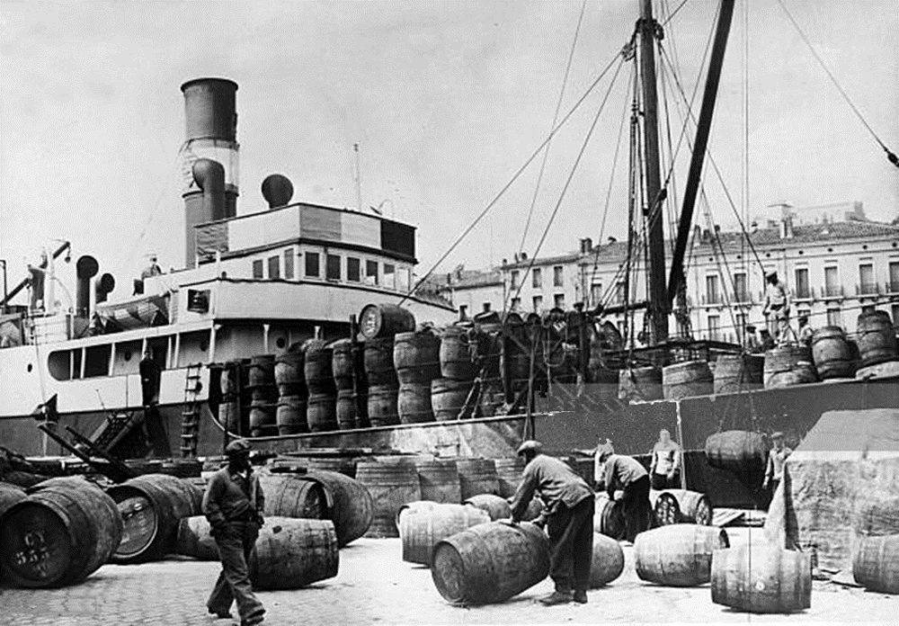

Warum Container?
Was sie lösen – und warum die Frage vor der Technik kommt.
Agilität will häufig liefern
AgilitätIn kurzen Abständen etwas Fertiges abliefern.
Häufig liefernHeißt: den Übergabepunkt zum Betrieb oft passieren.
Also selbst ausliefernWer ihn oft passiert, will ihn nicht jedes Mal verhandeln.
DevOps ist hier genau das – und nicht mehr: Entwicklung und Betrieb teilen sich Werkzeuge und Verantwortung.
Früher: die Wall of Confusion
„Bei mir läuft es.“
- wartet auf den Betrieb
- sieht die Logs nur auf Zuruf
- kann den Fehler nicht selbst nachstellen
„Dann hast Du es falsch gebaut.“
- bekommt ein Paket, das er nicht gebaut hat
- bringt es nach fremder Anleitung zum Laufen
- meldet zurück, was er im Log sieht
Was da flog – ein JAR, ein NPM-Paket, ein ZIP mit Skripten – heißt Code Bomb.
Jede Rückfrage nimmt denselben Weg zurück: Die Entwicklung kommt an nichts selbst
heran, wartet auf jede Antwort – und aus Minuten werden Tage.
Und dabei immer: die Anleitung
Java 17 installieren.
APP_ENVsetzen. Port 8080 freigeben. Verzeichnis/var/dataanlegen, Schreibrecht für den Dienstbenutzer.
Sie ist Prosa, und sie veraltet. Der Kern ist aber ein anderer: Ausgeführt wird sie auf dem Zielrechner – und sie verändert ihn. Ein Skript statt Prosa ändert daran nichts; es installiert dieselben Dinge auf derselben Maschine, auf der nebenan schon etwas anderes läuft.
Das Paket enthielt die Anwendung – aber nicht das, was sie zum Laufen braucht.
Was braucht eine Anwendung zum Laufen?
Das alles steckt ab jetzt im Paket – fertig installiert, nicht auf dem Zielrechner:
- Laufzeit und Bibliotheken
- Dateisystem, Verzeichnisse
- Startbefehl
- Ports
- Umgebungsvariablen
- Benutzer und Rechte
Außerhalb des Rahmens bleibt, was die Umgebung beisteuert: Adressen der Nachbardienste, Zugangsdaten, Speicher und CPU.
Das Paket heißt Container

Früher: Paket + Anleitung – ausgeführt auf dem Zielrechner, der sich dabei verändert.
Jetzt: ein fertig installiertes Artefakt – auf dem Zielrechner wird nichts mehr installiert. Es bringt seine Umgebung mit, läuft abgeschottet neben den anderen und startet überall gleich.
Container ist nicht virtuelle Maschine
| Virtuelle Maschine | Container | |
|---|---|---|
| Bringt mit | ein ganzes Betriebssystem | nur die Anwendung samt ihrer Umgebung |
| Kernel | einen eigenen | den des Hosts |
| Startet in | Minuten | Sekunden |
| Pro Maschine | eine Handvoll | Dutzende |